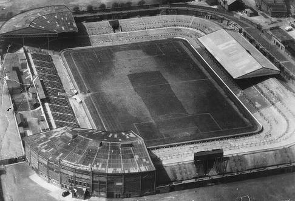
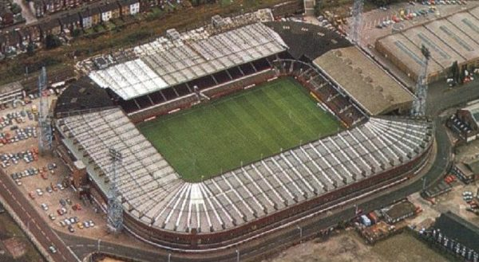
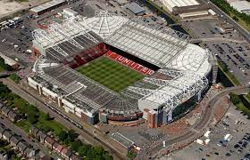
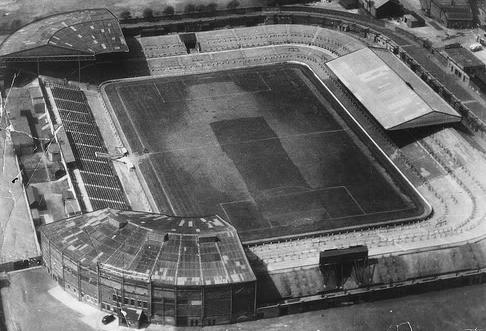
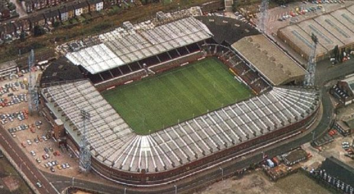
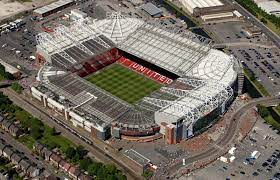
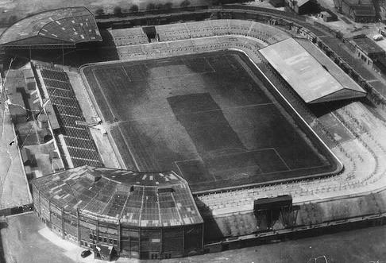
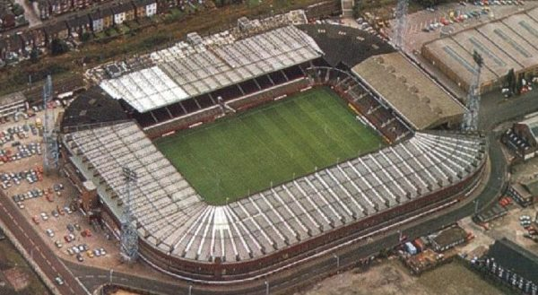
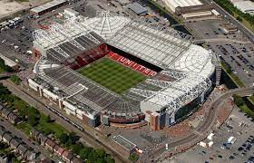

Stadion Old TraffordOld Trafford to, obok nowego Wembley, największy i najbardziej imponujący stadion piłkarski w Anglii, na co dzień należący do Manchesteru United. Podczas pamiętnego sezonu 1998/1999 każdy mecz na Old Trafford oglądało po 55 tysięcy widzów. Trzy lata później na trybunach mogło zasiąść już 67 tysięcy widzów. Po rozbudowie północno-wschodnich i północno-zachodnich trybun, która została przeprowadzona latem 2006 roku, pojemność stadionu wzrosła do ponad 76 tysięcy miejsc.
Oficjalne otwarcie stadionu nastąpiło w dniu 19 lutego 1910 roku. Wtedy to aż 50 tysięcy osób oglądało obfitujący w bramki mecz, w którym Manchester United uległ w stosunku 3:4 Liverpoolowi, mimo uprzedniego prowadzenia 3:0. Już wtedy krytycy drużyny określali ją jako “Moneybags United”, co miało odzwierciedlać rozrzutność, jaka cechowała klub. Jeden z dziennikarzy opisywał Old Trafford jako “cud wart obejrzenia”.
Miał on rację, jeśli weźmie się pod uwagę fakt, że już w tamtych czasach, pod jedyną krytą trybuną znalazły się również: pokój do gry w bilard, salon masażu, siłownia oraz basen. Łatwo więc zrozumieć, dlaczego piłkarze i kibice przeciwnych drużyn z taką zazdrością i zawiścią spoglądali na Old Trafford. 
 
